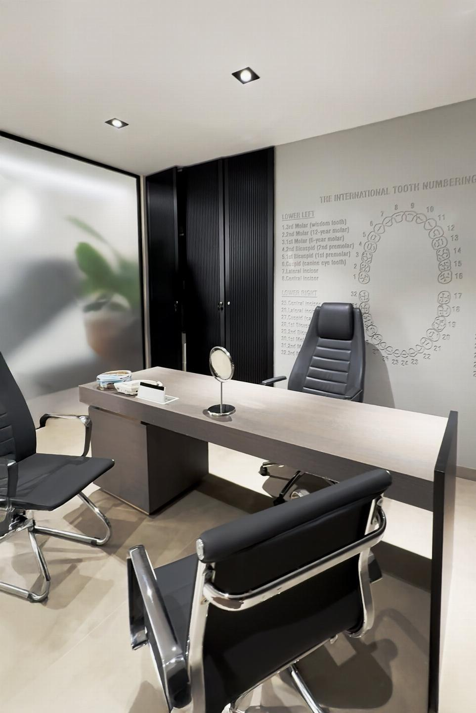
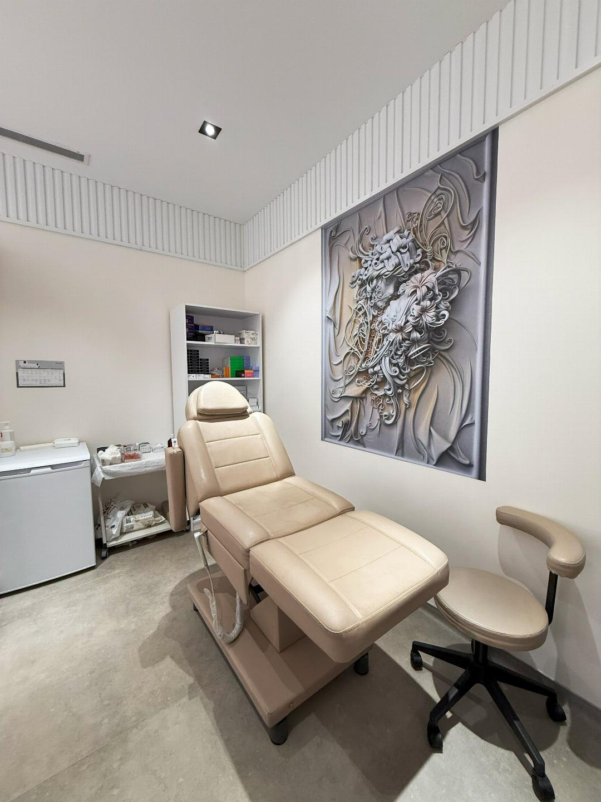
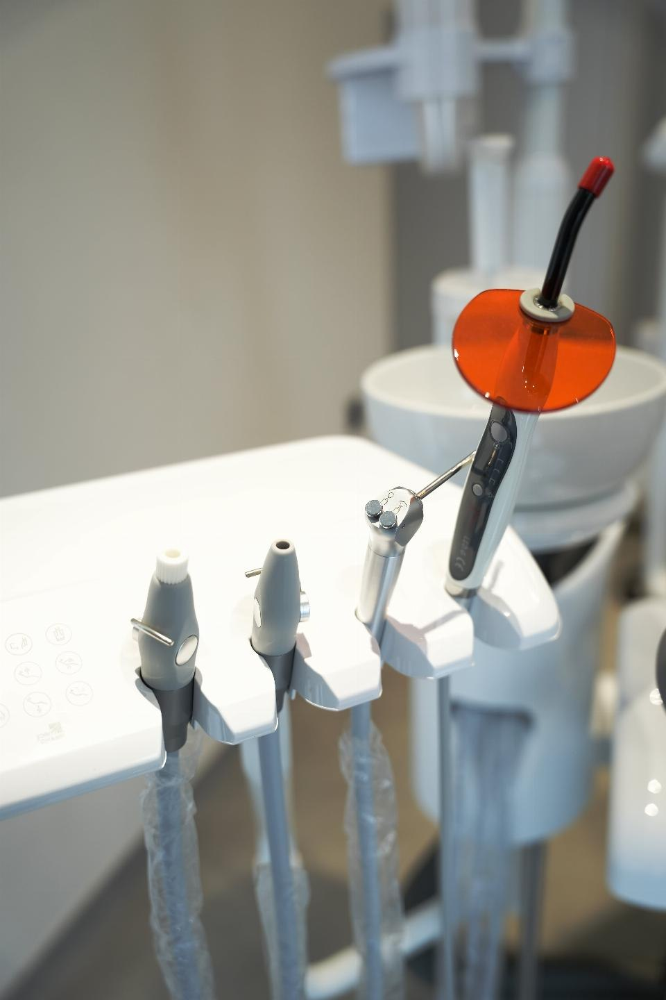

Large old restorations
Teeth with broad fillings or repeated repair history may need full coverage for better structural protection.
Crowns
Dental crowns are commonly used when a tooth has lost too much structure for a simple filling, already carries large restorations, has changed color, or needs a stronger and more aesthetic outer form. The correct crown plan depends on both function and appearance.
When crowns are considered
Teeth with broad fillings or repeated repair history may need full coverage for better structural protection.
Heavy wear, cracks, or weakened walls often make a crown a more stable solution than a simple rebuild.
Crowns may be part of the plan when color, alignment, and form need stronger correction across one or more visible teeth.
Some crown cases are not cosmetic only. Bite, chewing efficiency, and edge support may also need to be restored.
Material direction
Often chosen when strength and durability need to be balanced with a more refined smile appearance.
Used when front-tooth translucency and a lighter visual finish are more important and the case supports it.
A single crown case is planned differently from a wider smile rehabilitation where several crowns must work together visually.
Shade, edge design, tooth width, and smile line must fit the face and not only follow a generic white-smile target.

Treatment stages
The tooth condition, existing restorations, bite, and smile line are reviewed before deciding whether crowns are the right solution.
The crown material, target shade, tooth form, and the number of teeth involved are agreed before preparation starts.
The tooth is prepared according to the required coverage while protecting as much healthy structure as the case allows.
The prepared tooth or teeth are recorded so the final restoration can be made with the correct fit and contour.
The final crown is reviewed for fit, contacts, bite, and appearance before definitive placement.
Long-term success depends on hygiene, bite stability, and regular review of the surrounding gum and tooth condition.
Smile design considerations
The amount of remaining tooth structure influences whether crowns are indicated and how conservative the preparation can be.
Shade and tooth shape should match the patient's facial structure, existing teeth, and the overall smile line.
Good aesthetics only work long term when the bite, edge contacts, and daily function are also properly balanced.
Single crowns and full-smile crown cases need different planning depth, different timelines, and different lab sequences.

Dental room visuals
Used for smile-focused cases where design, shade, and proportion are discussed in more detail.

Chairside environment prepared for examination, preparation, and restorative delivery.

Closer room details that support precise restorative work and chairside review.
Dental doctors
Oral and Maxillofacial Surgery
Implant and Prosthetic Dentistry
Restorative and Aesthetic Dentistry
Crown consultation
Front smile photos, close-up tooth photos, and any previous dental work details make the first consultation more useful.